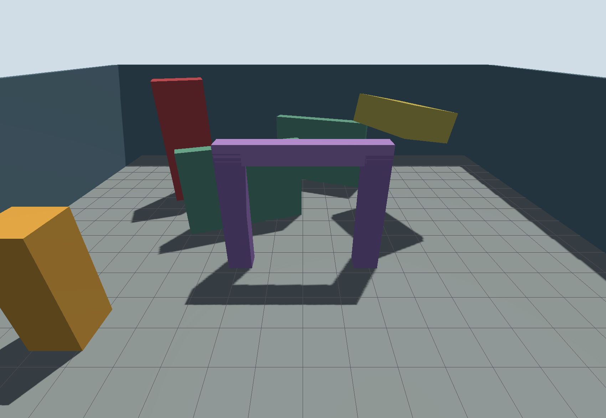
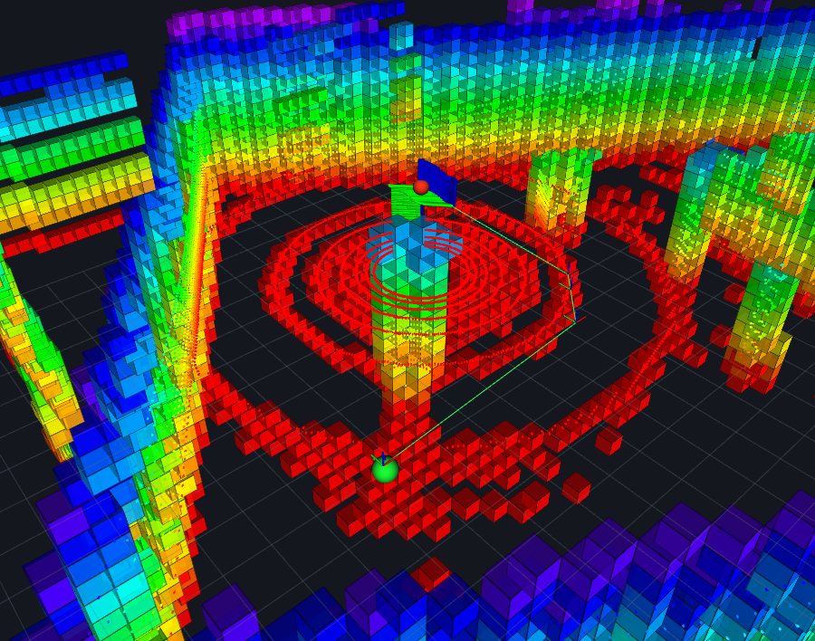
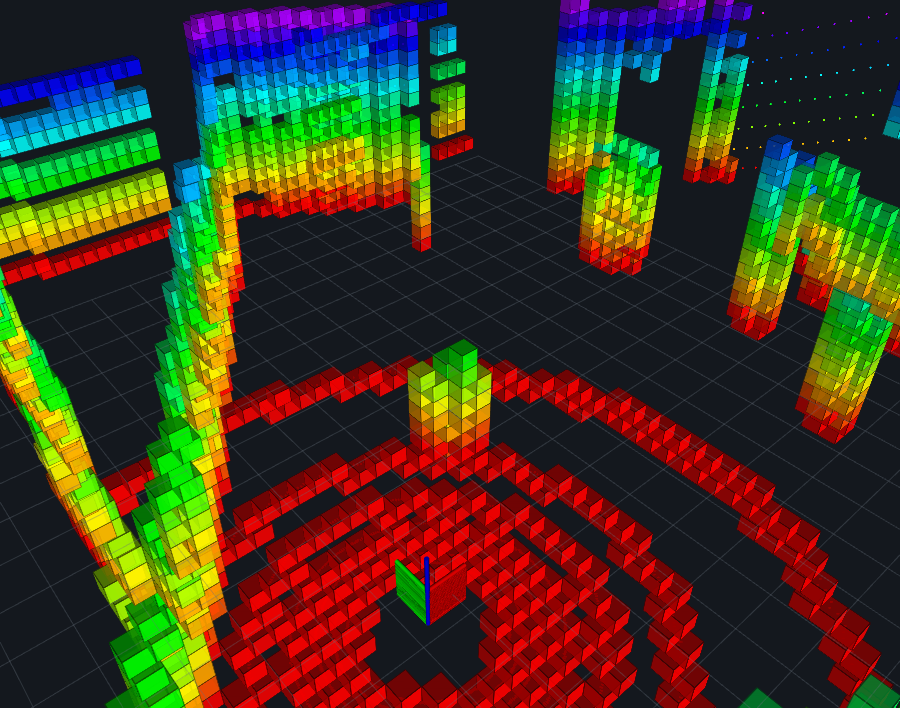
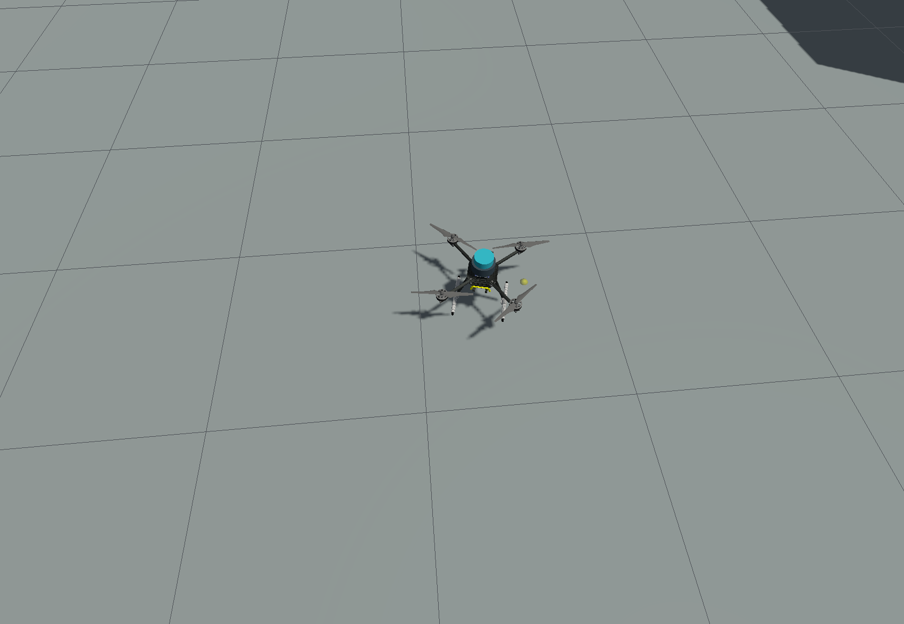

Gazebo Screenshot plugin · 1700×1173 01 0201
物理世界就绪
静态障碍具有不同高度、姿态和通行间隙；Gazebo 同时运行 x500、IMU 和 3D LiDAR。
Realtime autonomy loop · PX4 SITL
这是一条可实时观察的无人机三维导航主线：Gazebo 生成物理世界和 3D LiDAR，DLIO 估计运动，OctoMap 建图，开源三维 A* 规划，PX4 OFFBOARD 执行。 算法来自上游开源项目，本仓库只做启动、连接、安全校验和证据保存。

RViz · Save image · 900×708 · 非桌面截图Gazebo 使用自带 Screenshot plugin 保存 3D scene；RViz 使用 File → Save Image 保存 render panel。页面没有使用桌面全屏截图，也没有把终端窗口裁成“仿真图”。

Gazebo Screenshot plugin · 1700×1173 01 02静态障碍具有不同高度、姿态和通行间隙；Gazebo 同时运行 x500、IMU 和 3D LiDAR。

RViz Save image · 900×708 01 02彩虹色表达高度；方块是 OctoMap 占据体素。规划器读取的是同一份在线地图，而不是离线示意图。
本轮获得 9 点路径，横向绕行 3.394 m。路径通过完整性与净距校验后，才发送给 PX4 OFFBOARD。

Gazebo Screenshot plugin · B 点落地 L目标误差 0.037 m；任务切换到 AUTO.LAND，最终事件为 landed_disarmed。
每个框都是当前运行中的真实上游组件。项目代码只在组件边界做数据路由、目标接收、航点平滑、安全门和证据保存。
SITL 飞控、动力学、IMU 与 3D LiDAR。
激光惯性里程计输出 pose、velocity 与 yaw。
PX4 融合外部位置、机体系速度与航向。
将 pose + cloud 转为 0.4 m 三维占据地图。
MinimalOctomapPlanner 生成完整绕障路径。
拒绝不完整路径、越界点和净距不足路径。
平滑航点、到达确认、AUTO.LAND。
启动前检查系统、架构、主机命令、版本、资源、图形显示、runtime 文件和固定源码 commit。脚本不自动改代理、DNS、软件源或虚拟机设置。
x86_64当前验证机的真实检查摘要：
$ ./scripts/check_environment.sh --run宿主机依赖由用户按文档安装。项目脚本只检查、下载固定输入、构建和核验；完成后仍然只用 ./demo.sh 启动。
不会读取作者电脑上的其他项目。PX4、DLIO、MAVROS、Ubuntu rootfs 与补丁均有 commit 或 SHA-256 锁；ROS/Gazebo apt 实际版本写入 manifest。
打开完整环境、网络地址和排错边界 →# Ubuntu 24.04 Desktop / x86_64 git clone https://github.com/albert17github/PX4-3D-LiDAR-Nav-Demo.git cd PX4-3D-LiDAR-Nav-Demo ./scripts/check_environment.sh --setup ./setup.sh ./demo.sh --interactive
输出例如 setup stage 4/6 failed，不把多个下载或构建错误混在一起。
每个阶段保存到 runtime/logs/，上游 apt、curl、git 原始错误保持可见。
脚本不自动切换镜像、改 DNS、改代理或规避非推荐系统；修复后重新执行即可复用已完成内容。
新增环境检查先 PASS，完整栈用 247 秒到 ready；随后在线规划、执行全部航点、到达 B、AUTO.LAND。图片均在该轮运行中由 Gazebo/RViz 内部保存。
MRS MinimalOctomapPlanner 返回完整路径；PX4/DLIO/MAVROS/OctoMap 保持同一在线会话。任务事件末尾是 goal_B_reached → AUTO.LAND → landed_disarmed。